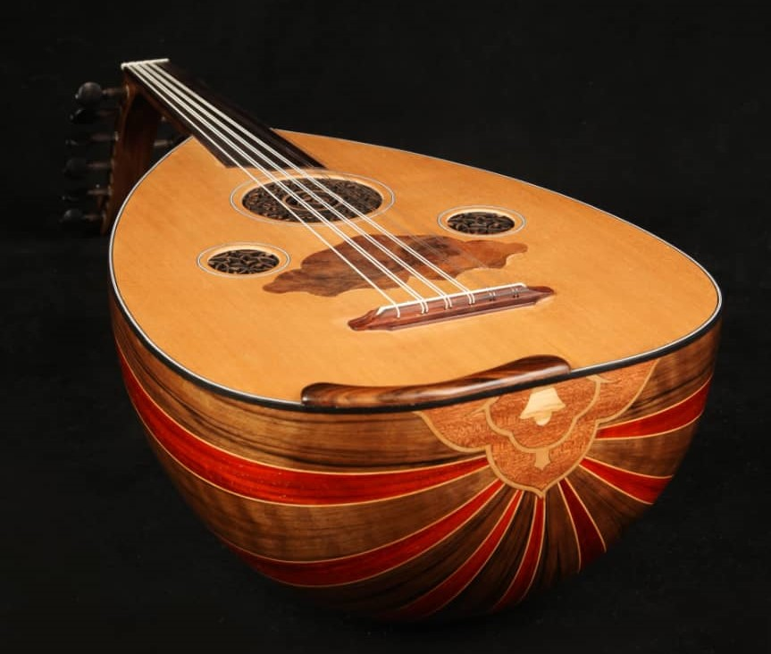

عود
بربت یا عود (همچنین رود)، سازی ایرانی از ردهسازهای زهی زخمهای است که در خاورمیانه و کشورهای عربی شمال آفریقا رواج دارد.
خوارزمی در مفاتیح العلوم نام این ساز را «بربط» آورده و گفته که در اصل «برِبت» است به معنی سینهٔ بت (مرغابی)، چرا که ظاهر آن شبیه به سینه و گردن مرغابی است. در صورتی که کتابهای لغت لاتین بهآسانی آشکار میدارند که اصل این کلمه، «باربیطوس» (Barbitos)، یونانی است و بعد به شکل باربیطون (Barbiton) در زبانهای خارجی معمول گردید.
تاریخچه عود
خاستگاه بربت با استناد به اکتشافات باستانشناسی به پنج هزار سال پیش، تمدن سومر و شهر اور بر می گردد. در نگارههای مصری به جای مانده از دو هزار سال پیش که نوازندگان را به تصویر کشیدهاند این ساز دیده میشود. پس از آن بربط به دیگر نقاط خاورمیانه از جمله ایران و عربستان دوره پیش از اسلام هم راه پیدا میکند. از بربت نوازان بنام ایرانی میتوان باربد، بامشاد، نکیسا و رامتین را نام برد. پس از اسلام و در پی خلافت اسلامی این ساز تکامل می یابد و گسترهٔ این ساز در سراسر جهان اسلام از چین تا اندلس گسترش میابد. در زمان حکومت عبدالرحمان دوم بر اندلس و دعوت او از یک نوازنده بنام به نام کمالالدین زریاب این ساز به اسپانیا وارد میشود. زریاب بربط را در این سرزمین گسترش و تکامل میدهد و از آمیختن این ساز با تار برای اولین ساز گیتار را میسازد. که هماکنون سالانه در اسپانیا بزرگداشتی به نام زریاب برگزار میشود. پاکو دلوسیا از مشهورترین نوازندگان گیتار در جهان برای گرامیداشت یاد او قطعهای به نام زریاب ساختهاست.

ساختار عود
شکم این ساز بسیار بزرگ و گلابی شکل و دسته آن بسیار کوتاه است. به گونهای که بخش اعظم طول سیمها در امتداد شکم قرار گرفتهاست. سطح رویی شکم از جنس چوب است که بر آن پنجرههایی مشبک ایجاد شدهاست. بربت فاقد «دستان» است و پرش از خرک ساز کوتاه و تا اندازهای کشیدهاست. بربت دارای ده سیم یا ۵ سیم جفتی است البته در برخی مواقع استادان قالب شکنی کرده و دو یا یک سیم در قسمت پایین قبل از سیم دو به ساز اضافه میکنند که این سیمها فا زیر کوک میشود.
سیمهای جفت با هم همآوا (کوک) میشوند و هر یک از سیمهای دهگانه، یک گوشی مخصوص به خود دارد؛ گوشیها در دو طرف جعبه گوشی (سر ساز) قرار گرفتهاند.
بربت بمترین ساز میان سازهای زهی ایرانی است؛ نتنویسی آن با کلید سل است (در واقع نتنویسی آن با توجه به وسعت و بمی صدای ساز بر اساس کلید فا میباشد که برای سهولت نت خوانی و نوازندگی یک اکتاو بالاتر نوشته میشود) که جمعاً دو اکتاو است. «اکتاو» بمتر از نت نوشته شده حاصل میشود. سیم بم (سُل پائین) معمولاً نقش «واخوان» دارد و گاه این سیم جفت نیست.
صدای بربت به گونهای است که صدای اکتاو چهارم پیانو از راست به چپ برابری دارد و در اصل باید بربت را با کلید «فا» نواخت یعنی صدای اصلی بربت یک اکتاو پایینتر از آن است که امروز متداول شدهاست.
مضراب بربت از پر مرغ (یا پر طاووس و شاهپر عقاب و حتی پر لاشخور تهیه شدهاست و گاه نیز نوازنده با مضراب دیگری ساز را مینوازد. نوازندههای امروزی از مضرابهای پلاستیکی استفاده میکنند.
صدای بربت بم، نرم و در عین حال گرم و جذاب و نسبتاً قوی است. این ساز نقش تکنواز و همنواز هر دو را به خوبی میتواند ایفا کند.